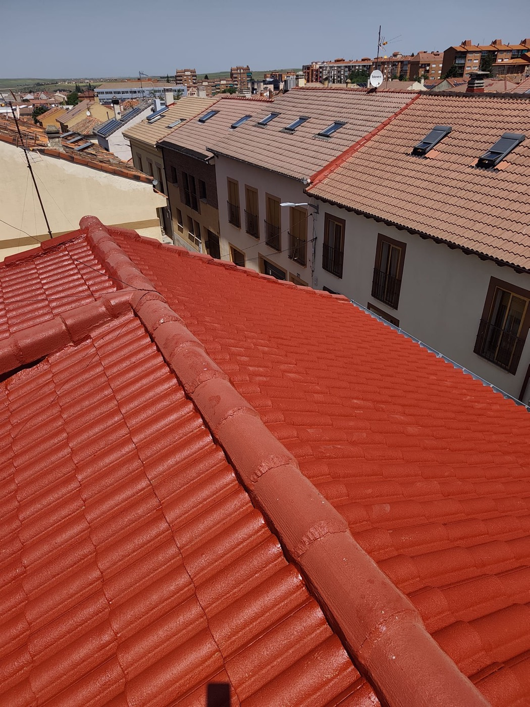
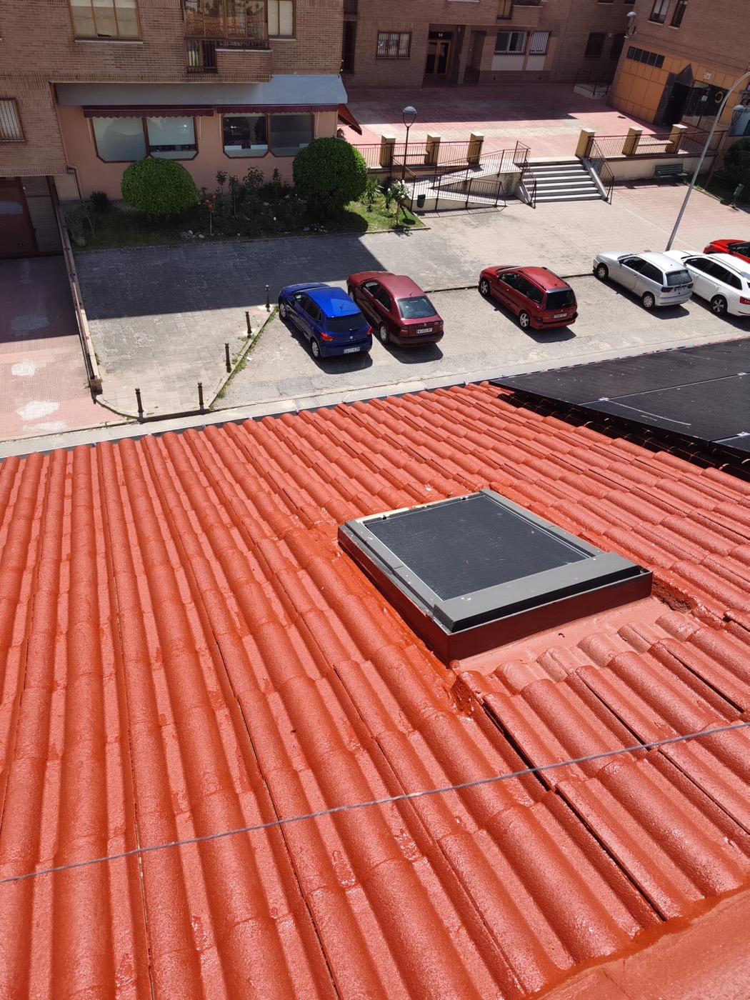
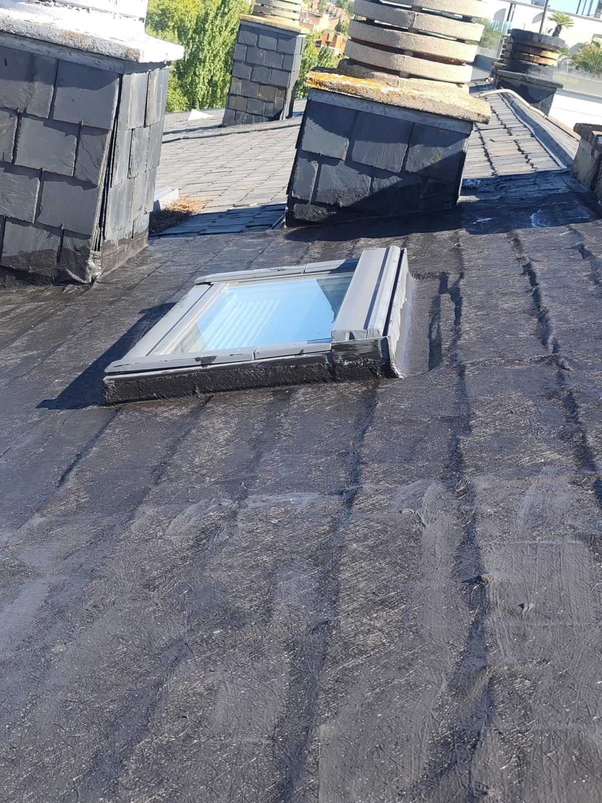
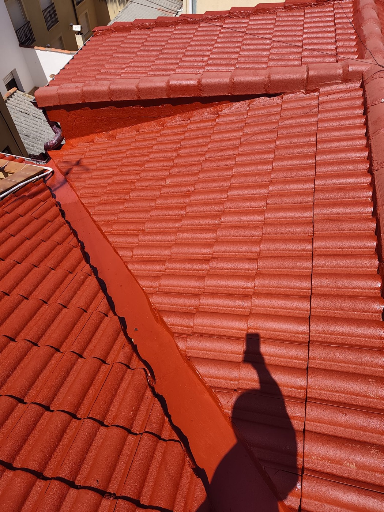
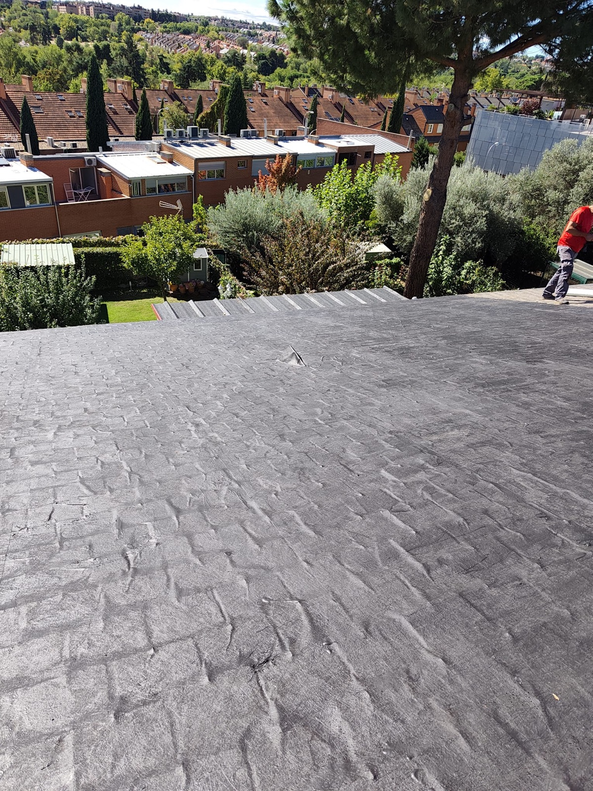
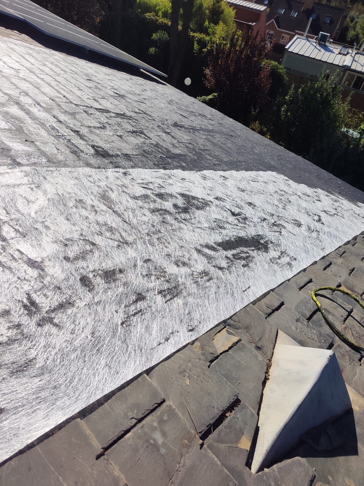
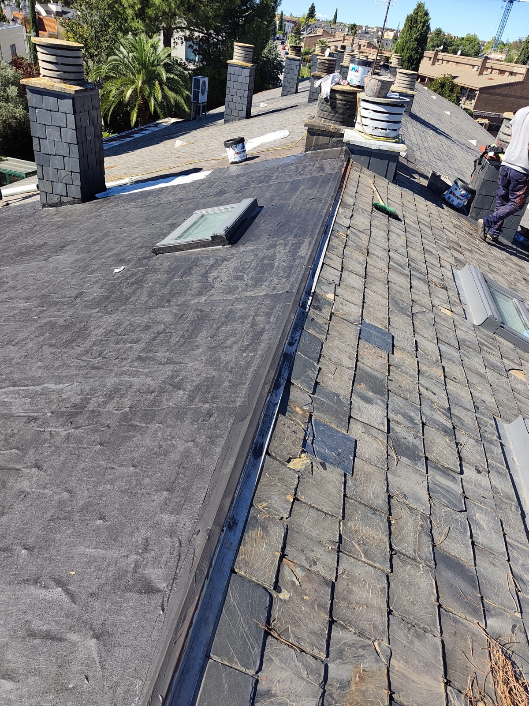
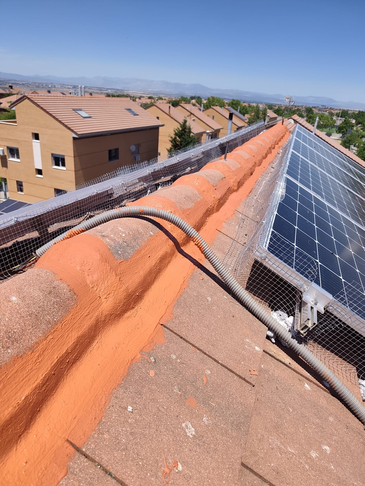
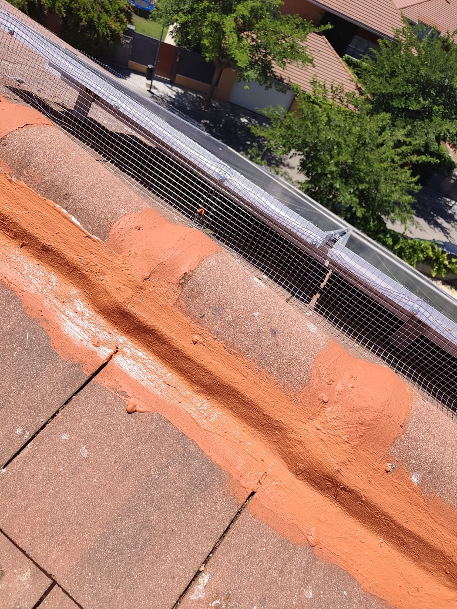

Canalones
y bajantes
Instalación, limpieza y reparación para conducir el agua y evitar desbordamientos y humedades en la fachada.
Ver el servicioTejados · Canalones · Impermeabilización
Cuidamos lo que protege tu hogar. Instalamos canalones, reparamos tejados y ponemos solución a goteras y humedades.
De un pequeño remate a una cubierta completa.
Hablamos contigo, de principio a fin.

Oficio que se ve. Protección que se nota.UN VISTAZO A NUESTRO TRABAJOLos detalles marcan01 / Qué hacemos
Localizar el problema es el primer paso. Revisamos qué necesita tu tejado, canalón o terraza y te explicamos cómo abordarlo.
Instalación, limpieza y reparación para conducir el agua y evitar desbordamientos y humedades en la fachada.
Ver el servicioReparación de tejas y mantenimiento de cubiertas. Atención a cumbreras, chimeneas y encuentros de ventanas VELUX y buhardillas.
Ver el servicioImpermeabilización con membranas y refuerzos de fibra de vidrio y poliéster, caucho y manta asfáltica para cubiertas y terrazas.
Ver el servicio02 / Trabajos reales
Impermeabilización de cubiertas, ventanas VELUX, buhardillas y remates.
Impermeabilización de encuentros en teja y pizarra.

VELUX en cubierta de teja

VELUX en cubierta de pizarra
Tratamientos sobre teja y pizarra.
Impermeabilización sobre teja

Protección de cubiertas

Impermeabilización sobre pizarra

Refuerzo de impermeabilización

Tratamiento de cubiertas
Atención a encuentros de cubierta, chimeneas y buhardillas.

Sellado de remates

Sellado de juntas
03 / Nuestro oficio
Somos varias generaciones dedicadas a los tejados, los canalones y la impermeabilización. Un oficio aprendido en familia que seguimos poniendo en práctica en cada trabajo, con trato cercano y atención a los detalles.
Habla con nosotros ↗Una gotera, un canalón que rebosa o una cubierta que necesita atención. Puedes enviarnos fotos por WhatsApp.
Revisamos la información y concretamos contigo lo necesario para valorar el trabajo y preparar el presupuesto.
Te explicamos la solución propuesta, los materiales y el alcance antes de empezar.
Antes de empezar
Sí. Envíanos por WhatsApp fotos de la zona afectada, una descripción del problema y la localidad. Nos servirán para una primera valoración; según el caso, será necesario revisar la cubierta en persona.
Realizamos instalación, limpieza y reparación de canalones y bajantes. El estado de las piezas y el origen del problema determinarán la solución adecuada.
Realizamos trabajos de impermeabilización y sellado en los encuentros de ventanas VELUX y buhardillas con la cubierta, así como en chimeneas y otros remates.
Trabajamos con membranas y refuerzos de fibra de vidrio y poliéster, caucho y manta asfáltica. La solución se valora según el estado de la cubierta y el tipo de intervención.
Sí, realizamos impermeabilización de terrazas y superficies planas, prestando atención a juntas, desagües y encuentros donde puede filtrarse el agua.
Indícanos la localidad, el tipo de trabajo y qué problema has observado. Si tienes fotos, envíanoslas. Con esa información concretaremos contigo los siguientes pasos.
Vamos a ponerle solución
Cuéntanos qué necesitas. Estamos al otro lado.